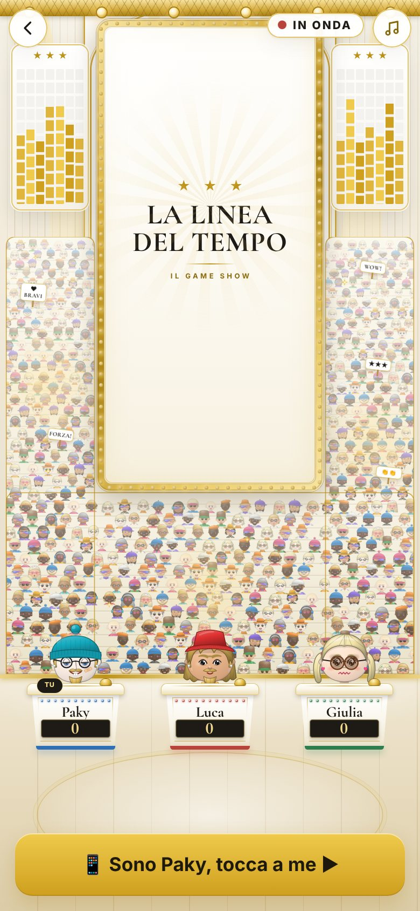
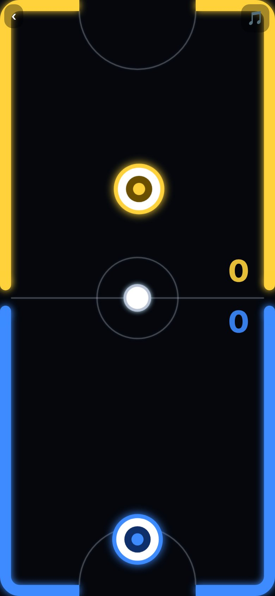
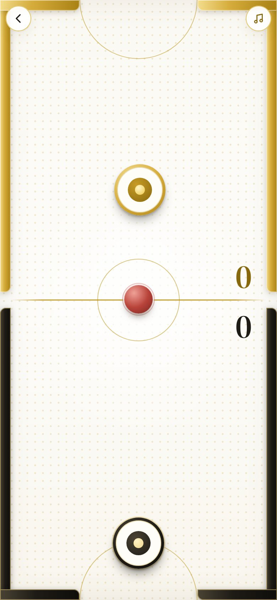
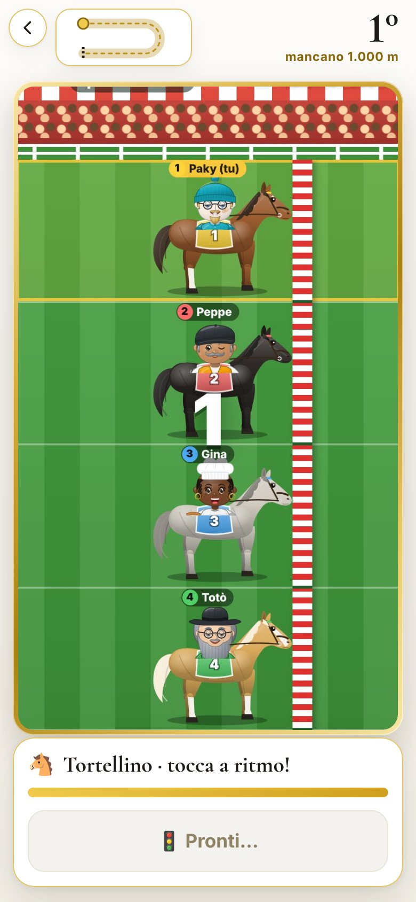
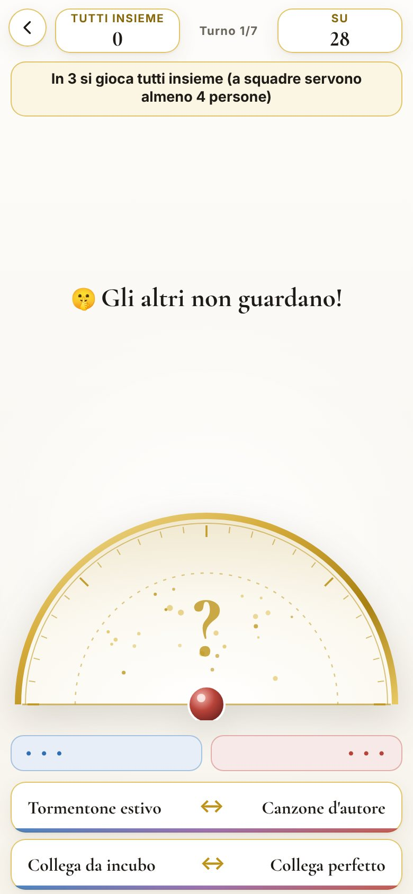

Le due cose che aspettano il tuo sì
Le schermate dell'app e quasi tutti i giochi sono già in Bianco e oro. Restano due parti grosse che non ho voluto toccare senza che tu le avessi viste: lo studio TV e le scene disegnate. Qui trovi com'è oggi (a sinistra) e come potrebbe diventare (a destra). Non ho cambiato nessun gioco: sono solo disegni di prova.
Lo studio TV elegante
Il set del game show di sette giochi (La Balla Colossale, Nomi Cose e Città, Parola d'ordine, La Patata Bollente, Il Prezzo è Giusto, La Ruota della Fortuna, La Linea del tempo): da viola e neon a legno chiaro, luci calde e cornice d'oro. Il pubblico, i fari, le lampadine e i coriandoli restano vivi.


Le scene disegnate
Horto Muso, Palla Matta, Palla a Pendolo, Glow Hockey, Calcio Biliardo, Chi di Noi?, L'Asta e Stessa Lunghezza d'Onda. Per ognuna una riga: «tenerla com'è, incorniciata» (cinque giochi) oppure «ritoccarla così» (tre giochi). Per tre ho fatto il disegno di prova.




Cosa mi serve da te
Studio TV: schermo chiaro o scuro? Il chiaro tiene tutto l'app bianco e oro; lo scuro è più «televisione».
Io direi: chiaroStudio TV: pubblico più piccolo e più chiaro, e luci tutte calde?
Io direi: sìScene: va bene la divisione «tenerla» / «ritoccarla»? (Horto Muso, Palla Matta, Palla a Pendolo, Calcio Biliardo, L'Asta restano; Glow Hockey, Chi di Noi?, Stessa Lunghezza d'Onda si ritoccano.)
Io direi: sìGlow Hockey: tavolo avorio o lo teniamo scuro e incorniciato?
Io direi: tavolo avorioDa dove si parte? Lo studio è un lavoro grande ma serve a sette giochi insieme; le scene da «tenere» sono lavoro piccolo.
Io direi: prima le scene da tenere, poi lo studioDal vivo (i disegni si muovono: fari, lampadine, colonne luminose, cartelli): studio · Glow Hockey · Horto Muso · Stessa Lunghezza d'Onda. Si aprono bene su un telefono (390 × 844).